A drying rack for makeup brushes that folds into a flat tray, 170 × 113 × 8.6 mm, small enough for a drawer. Flip up two frames and it holds 10 brushes with the bristles hanging forward in the air, tilted 10° down, so water drains out of the bristles instead of back into the ferrule.
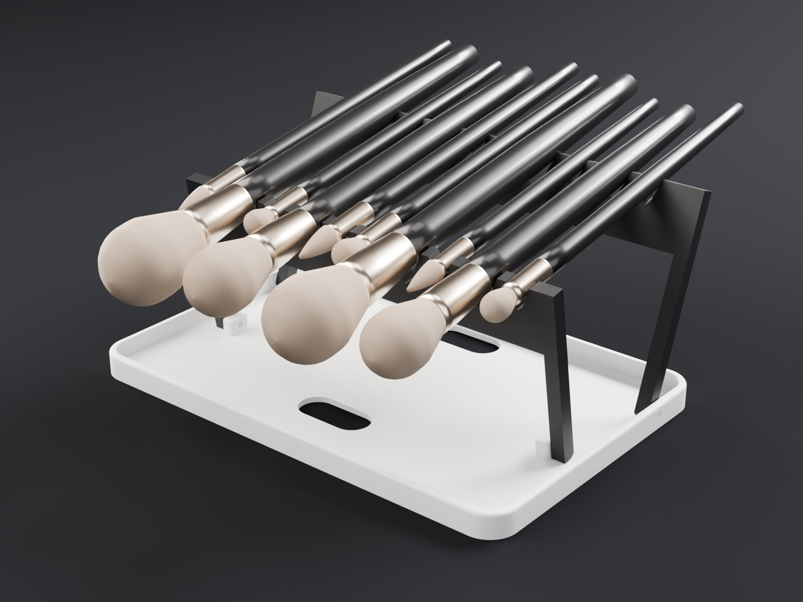
To open, lift the back frame first, then the front frame. To fold, lay the front frame down first. If you do it the other way round, the two frames bump into each other. Nothing breaks, they just won't pass. Each frame swings until a small heel on its leg lands on the floor. That's the stop, and gravity holds it there. There are no latches.
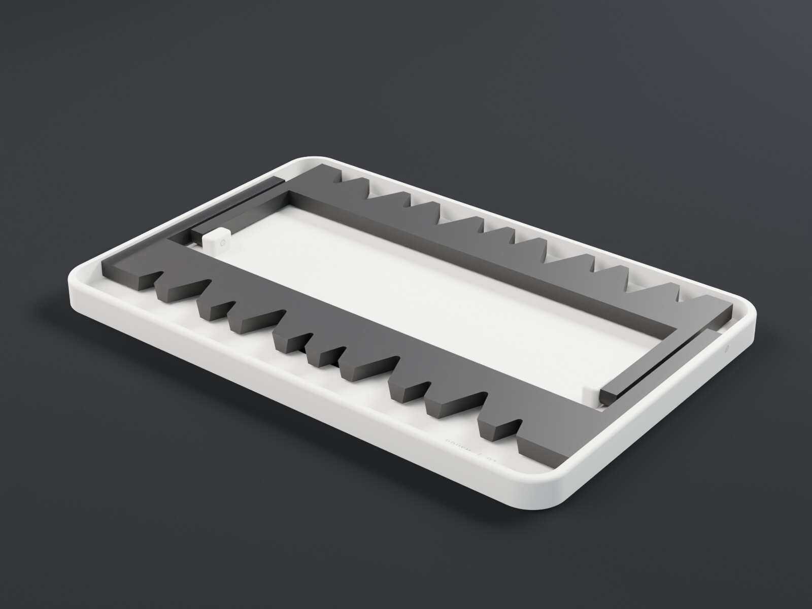
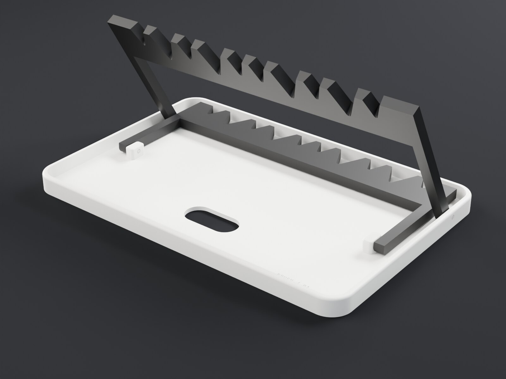
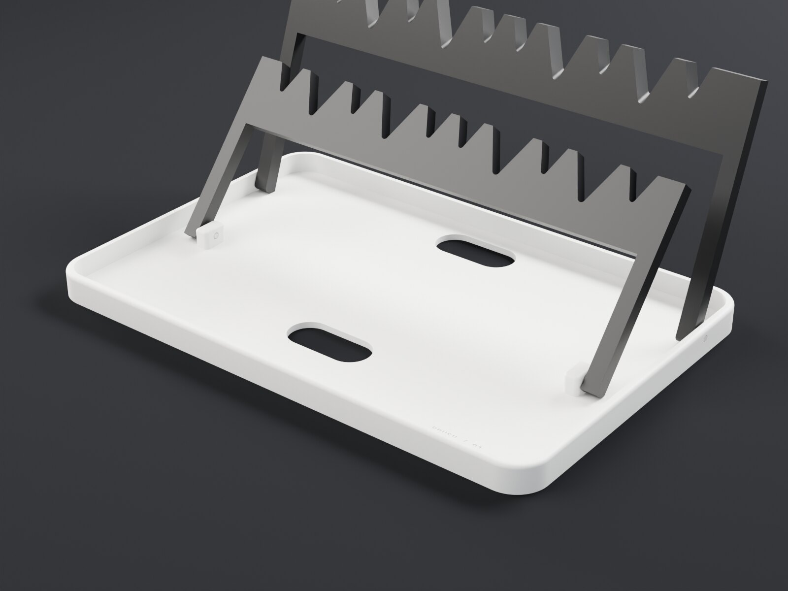
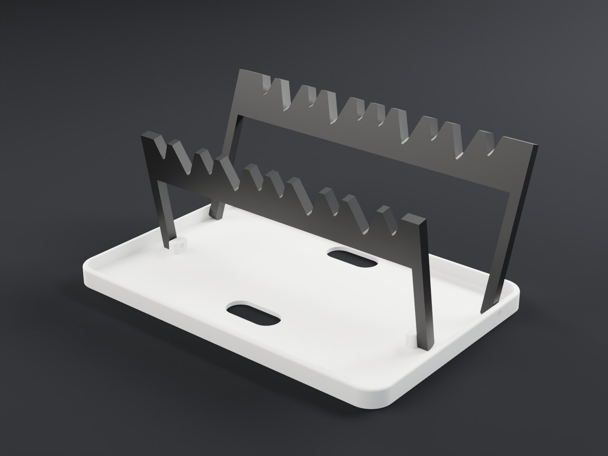
Hanging brushes need something that grips the handle. With rigid PLA that means rubber rings or clips that suit only one size. Laying a brush across two V-notches works for any handle. 10° is steep enough that water runs toward the bristle tips. It's also shallow enough that friction in the V holds the brush: PLA on a brush handle needs about 0.18, and the V-notch roughly doubles the grip.
Each frame is a notched bar on two legs. The front frame's legs sit just inside the back frame's legs, so both frames fold flat into the same 5 mm layer and never cross. That's why it folds to 8.6 mm. A script swings both frames through their whole travel and checks for collisions. It found none.
The front frame leans forward, so its own weight and the brushes' tendency to slide forward both push it onto its stop. The back frame leans 20° back, so gravity holds it against its stop. Each stop is a heel on the leg, shaped from the swing path so it clears the floor the whole way and lands flat at the end.
The slots are laid out S L S L S S L S L S. Big brush heads are 25–30 mm wide, too wide to sit side by side at handle spacing. So each large slot has a small one next to it. Eye brushes sit about 14 mm further back than face brushes, so the small heads stay behind the big ones.
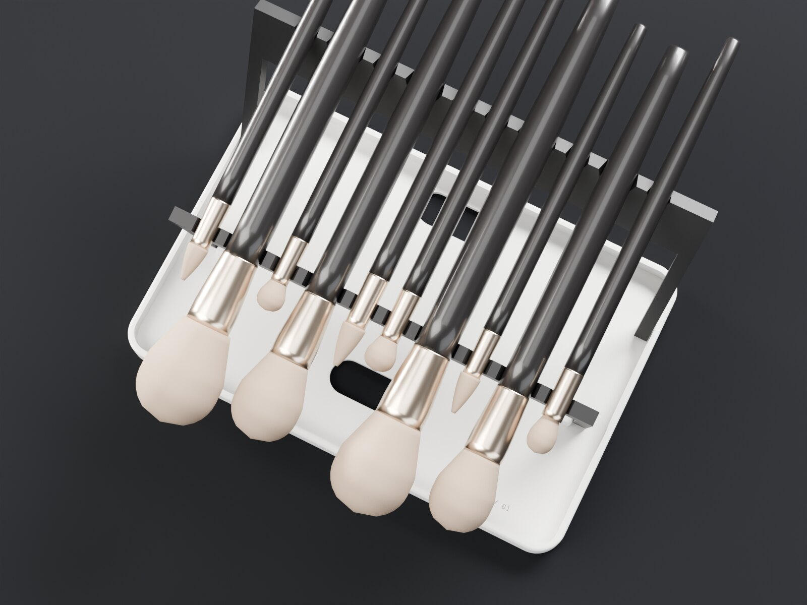
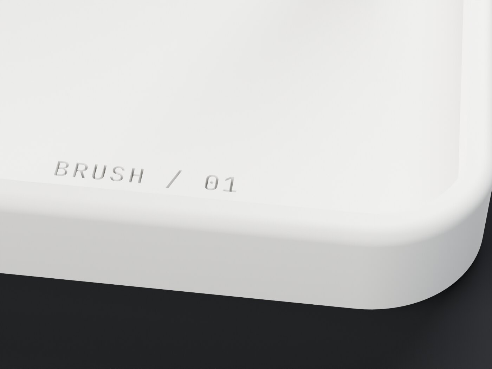
BRUSH / 01 engraved into the floor, 3.6 mm tall.b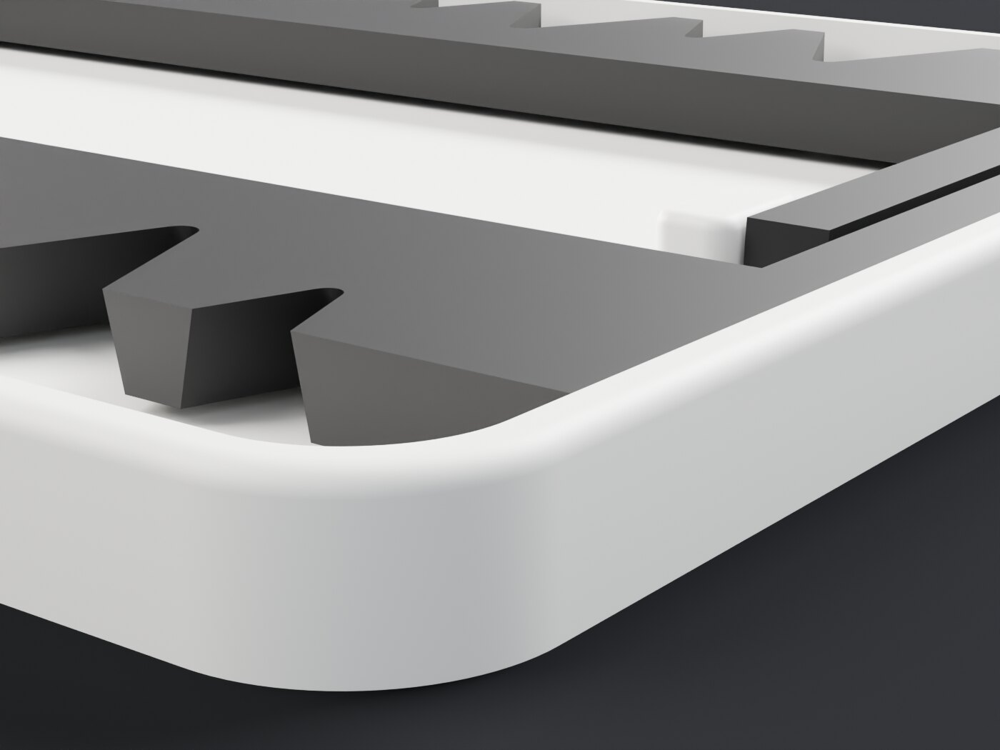
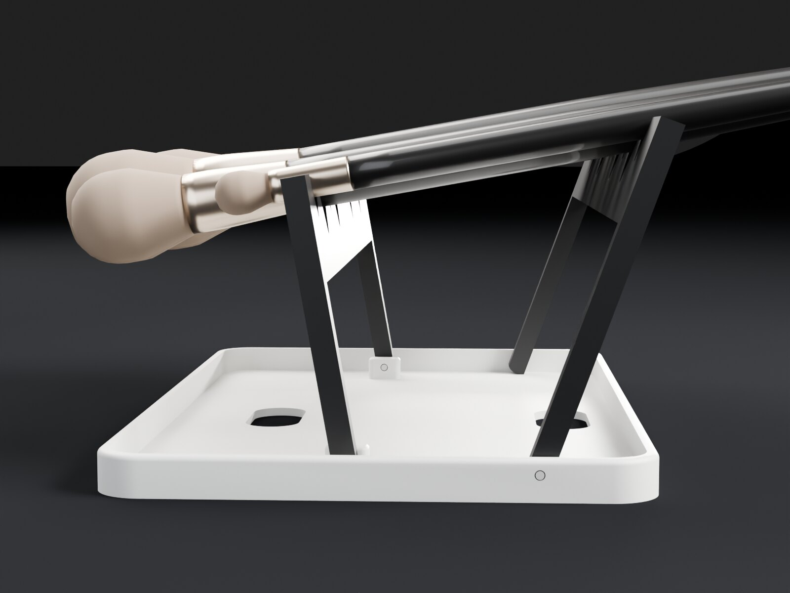
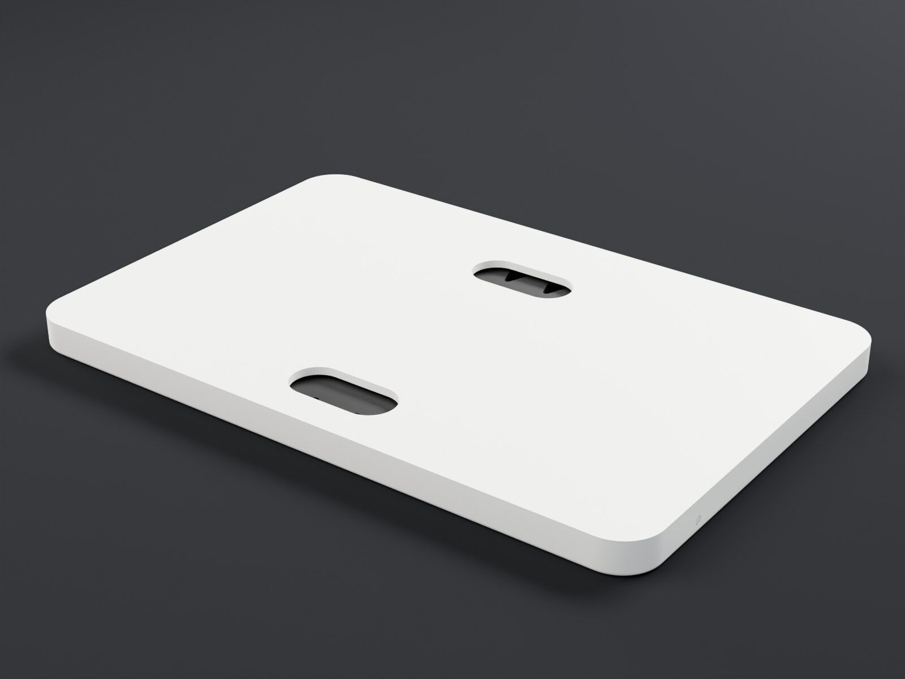
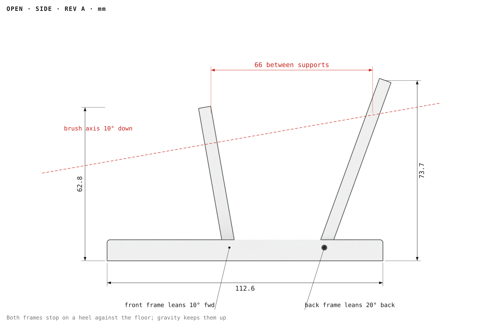
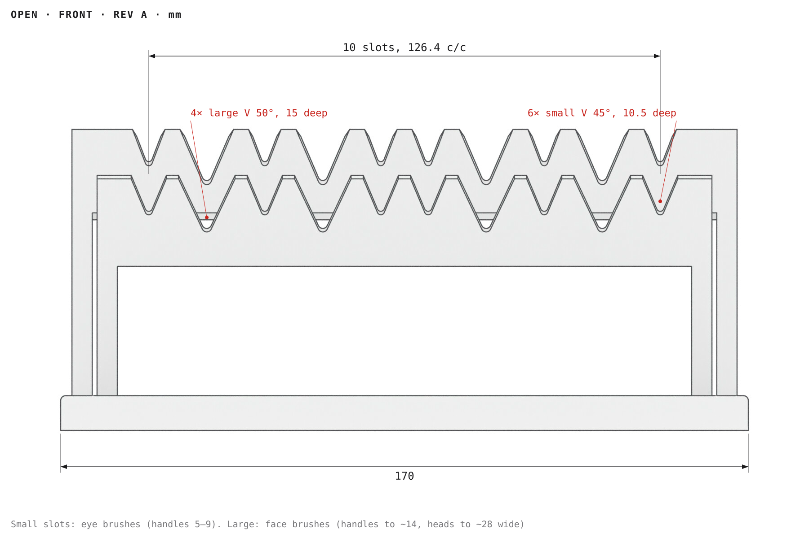
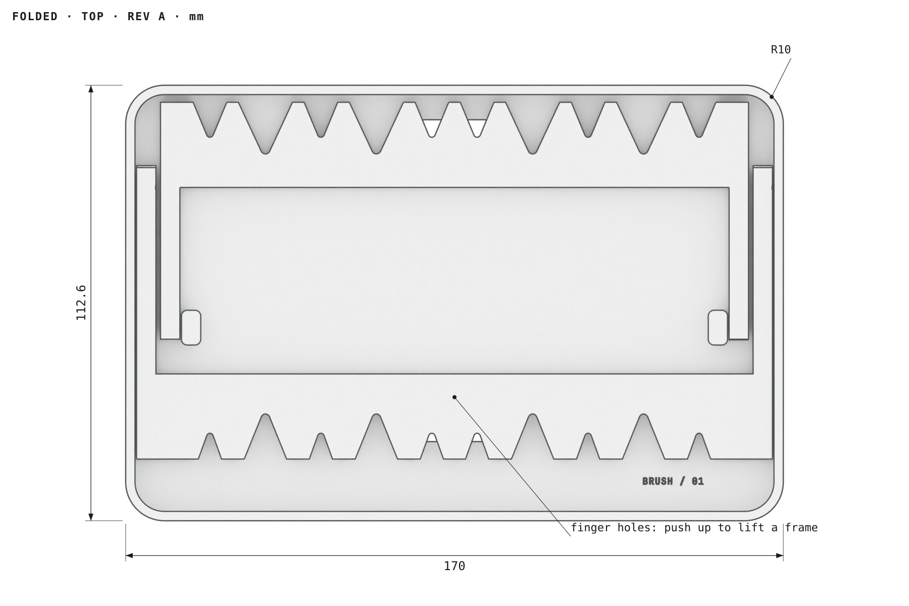
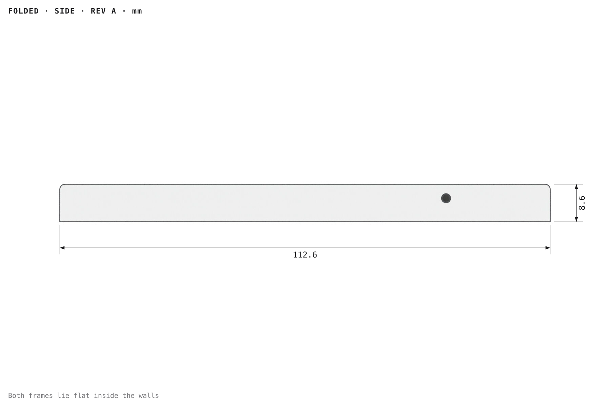
| Part | PLA | Orientation | Size (mm) | Approx. |
|---|---|---|---|---|
| Tray | White | Floor down | 170 × 112.6 × 8.6 | ~50 g |
| Back frame | Black | Flat | 164.4 × 75.9 × 5 | ~20 g |
| Front frame | Black | Flat | 152 × 61.4 × 5 | ~17 g |
The weights are my estimate from the part volumes. Bambu Studio will give the real time and filament once it's sliced on the PC. The two frames fit on one plate.
Chelsea's real brushes. I designed for typical sizes: eye-brush handles 5–9 mm, face-brush handles up to ~14 mm, heads up to ~28 mm wide. A brush also needs about 75 mm of handle behind the ferrule to reach both supports, so mini or travel brushes won't fit. Measuring her biggest and smallest brushes would confirm the slot sizes.
Grip at 10°. Glossy lacquered handles are slippery. If a brush creeps forward, the fix is a single number in the model (tilt 10° → 8°), or a strip of silicone tape in the notches.
Knocking the back frame forward. It stays up by leaning back, so a hard knock from behind could fold it. If that turns out to be annoying, rev B can add a small click detent at the hinge.
Fold sweep checked: no collisions at any angle when opened back frame first. All parts fit the A1 Mini bed, and each part is one colour.